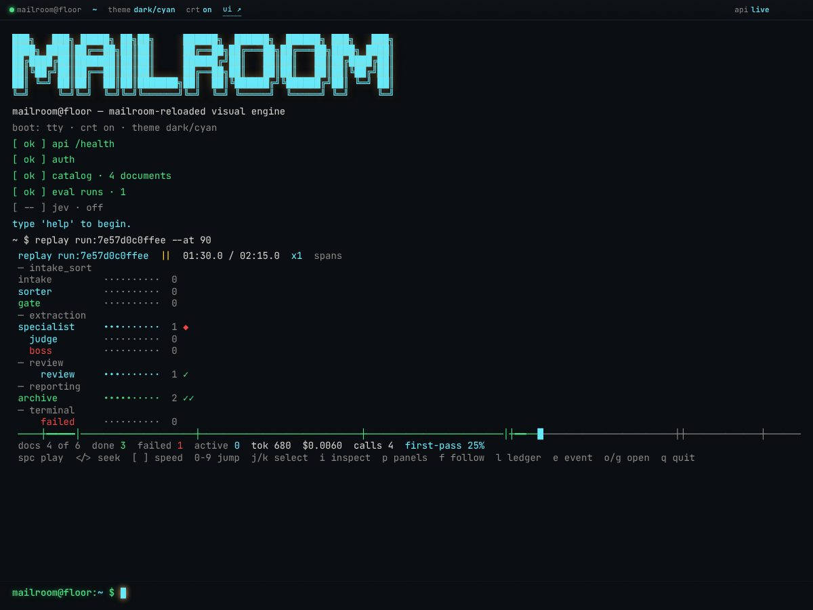
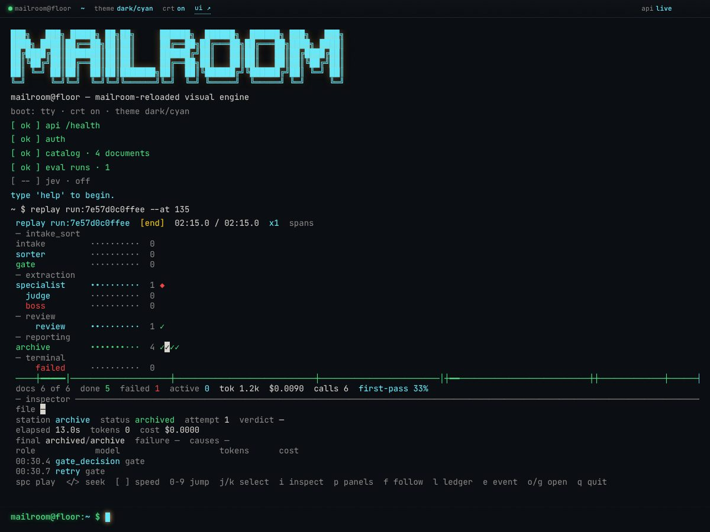
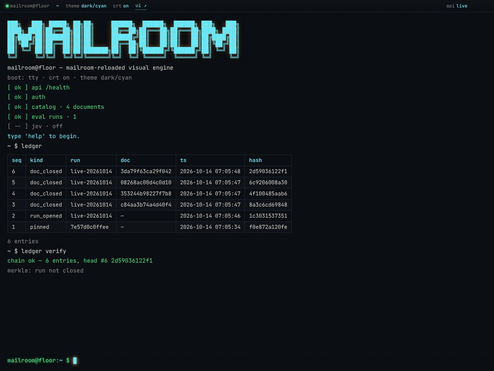

Mailroom Reloaded: technical report
Agentic document pipeline · deployable rebuild
Summary
Mailroom Reloaded is a single deployable service that ingests documents, classifies them, extracts structured fields and archives them with a verifiable audit trail. It is built on CrewAI Flows, but a deterministic driver, not the framework’s event engine, owns control flow. Agents are called at fixed points, and routing between them is plain threshold code. A clean text-layer document costs exactly two LLM calls.
The package is version 0.4.2 and requires Python 3.11 or 3.12. No accuracy or cost results are committed to the repository, so this report publishes none. It describes what the system does and the evidence that it runs.
System and data
The canonical main path is ingest, bert_primary, sort, gate_classify, extract, gate_extract, then report_catalog_archive (pipeline/state.py). The two gates are pure route computations. verify, boss, human_review and an evaluation-only grade step are dispatched by the driver outside that tuple.
| Node | Kind | Module |
|---|---|---|
ingest |
deterministic: text normalisation, PDF text layer, else vision transcription | ingest/clerk.py, ingest/pdf.py, ingest/vision.py |
bert_primary |
local ModernBERT classification plus a handoff policy; fails open | ingest/bert.py |
sort |
LLM call 1: structured sorter | agents/sorter.py |
gate_classify, gate_extract |
deterministic route decisions, zero LLM calls | agents/gate.py, pipeline/flow.py |
extract |
LLM call 2: per-class specialist | agents/specialists.py |
verify |
LLM: judge, then arbiter | agents/judge.py, agents/arbiter.py |
boss |
LLM: escalation and class reassignment | agents/boss.py |
report_catalog_archive |
deterministic: report, move to archive, catalog row | pipeline/report.py, pipeline/archivist.py |
human_review |
deterministic: park in review/ |
pipeline/flow.py, review.py |
The driver is MailroomFlow._drive_nodes in pipeline/flow.py. The decorated @start, @listen and @router methods exist so the class is routable and plottable, and they delegate to the same guarded node implementations. The stated reasons for an explicit driver are that CrewAI rejects the literal self-loop wiring, and that crash resume and deadline enforcement need one deterministic traversal.
The fast path and its failure mode
ingest and bert_primary are local, so they add no LLM calls. If ModernBERT is flagged off, missing, given an oversized input, or raises, the adapter returns an “unavailable” verdict and the handoff forces a full sort. Classes listed under defer_classes (by default contract and merger_agreement) and multi-window verdicts also fall back to a full sort. The model comes from Mailroom-ML through the optional bert extra.
The gates and their escalation paths
BandGate applies per-class thresholds from config/taxonomy.yaml. The global defaults are a high band of 0.95, a low band of 0.70, and retry_max of 2. Some classes override them.
| Stage | Condition | Action |
|---|---|---|
| classify | BERT and sorter disagree, not yet re-sorted | re_sort (once, as a full sort) |
| classify | confidence at or above the high band | proceed |
| classify | below high, retries left | retry the sort |
| classify | below high, retries spent | human_review |
| extract | length-capped or schema-invalid output | retry, then human_review |
| extract | confidence at or above judge_band_high |
proceed |
| extract | between low and judge_band_high |
verify (judge, then arbiter) |
| extract | below low, retries left | retry the extraction |
| extract | below low, retries spent | boss |
The arbiter’s verdict maps accept and accept_with_caveats to report, re_extract to a retry, and escalate to the boss. The boss can reassign the class once, after which the document is extracted again, send the document to human review, or accept it. If the arbiter asks for a re-extraction after the retries are spent, the document goes to human review.
The gate slot is pluggable. A LearnedGate (logistic model stored as plain JSON) loads when models/route_gate.json exists. It overrides the band only inside the medium band and never a hard rule.
Jev, the opt-in decision model
Jev (the “TypeSafe System One”) is a probabilistic decision model, not a text generator. It returns typed answers: a choice with a probability distribution, a noul (a single probability of yes), or a score. The gate asks it two questions: which route (proceed, retry, verify, boss or human_review) and whether to escalate to a human. Its confidence is derived from the concentration of the probability distribution, so it must be re-scaled by a calibration before the gate trusts it.
A JevGate is used only when the provider is switched on and models/jev_calibration.json exists. It asks only inside the medium band and never overrides a hard rule. Calibration (mailroom jev calibrate) fits a temperature and thresholds, and refuses any row whose split is not train. When Jev is off, which is the default, the pipeline behaves as it does without it. Its default accept threshold is 0.8.
Durability
- Bins are directories under a base directory:
inbox,processing/<worker>,classified,review,failed,archiveandmanifests. A worker claims a file by atomic rename, and a loser of a race gets nothing and moves on (storage/bins.py). - A manifest records the document id (the first 16 hex characters of the content sha256), filename, status,
completed_nodesand serialised state. It is written with a temporary file andos.replace. - Each node is wrapped by
guarded(...), which on success appends the node tocompleted_nodes, snapshots state and appends an audit entry (pipeline/guards.py). On startup the watcher re-runs every manifest still in statusprocessingfrom its first incomplete node (watcher.py). - The per-document audit log is an append-only SQLite table keyed by document id and sequence. Each entry holds
prev_hashandentry_hash, a sha256 over canonical JSON. Appends are resume-safe: a repeated node and event with an identical payload writes nothing (storage/audit_log.py). - A separate archive ledger is one hash chain over every run (
storage/ledger.py), with optional off-host anchoring andmailroom audit verify,anchorandexport-headcommands. - An exclusive
flock(watcher.lock) admits one draining process, which is why thesplit-watcherprofile requires the embedded watcher to be switched off.
Iteration history
The repository’s changelog is the iteration record (141 commits in the history I could read). Notable recent entries, newest first:
- 0.4.2 (2026-10-11) — fixed the
/uidocuments table at phone widths. Verified at 420, 768 and 1280 px with no page-level horizontal overflow. - Unreleased — accessibility passes on
/uiand/tui(a page heading, labelled tables, live regions, keyboard-reachable rows, focus rings, contrast fixes), a real provider probe behindGET /ready, and a fix somailroom evalno longer drops rows whose filename has no supported suffix. Dormant sandbox deep links removed from/tui. - v1 trim — an offline ingress simulator was moved off
mainonto a feature branch, leaving the core pipeline and the replay viewer. Verified on mergedmain.
Results
There are no committed accuracy, cost or throughput results. The evaluation harness (mailroom eval) exists, but I have not published a run. What follows is verification evidence, not model quality.
Evaluation harness design
- The dataset is loaded at a pinned revision (default
ed7576b6) with a blind configuration (text only, no labels) and a separate ground-truth configuration, joined on filename. A sha256 check against the document text raises an error on mismatch. - Sampling is per class and nested: with the same seed and class, the 20-document draw is a prefix of the 50-document draw. The default seed is 42, the default is 20 documents per class, and the default split is
test. - The learned gate and sorter temperature calibration are fitted on the
trainsplit only; the fitting code raises an error for any other split, and KPIs are meant to be reported ontest. - After sampling, the runner checks overlap with the fast-path model’s training manifest and records a warning instead of failing, so overlapping documents can be excluded from reported numbers.
- Metrics cover sorter KPIs (accuracy, confusion matrix, expected calibration error, fast-path rate), specialist KPIs (field precision, recall and F1, schema-valid rate) and gate KPIs.
Verification run on merged main (2026-10-11)
This used a mock LLM provider with four seeded documents. It tests plumbing, not model quality.
| Check | Result |
|---|---|
ruff check . |
all checks passed |
uv run pytest -q |
1,597 passed, 3 skipped, 3 deselected, 0 failed |
node --test tests/tui/js/*.test.mjs |
290 pass, 0 fail |
| replay-only subset of those | 96 pass, 0 fail |
GET /v1/documents |
4 documents, all archived |
| browser replay check script | 11 of 11 checks passed |
The changelog later records the TUI Node suite as 300 tests after removing dormant code, so the 290 above is the verification-time figure and the two differ because the code changed in between.
Figures



Reproducibility
Install and run the tests, with live-provider tests deselected by default:
uv sync --extra dev
uv run pytest -q
uv run ruff check .
node --test tests/tui/js/*.test.mjs
node --test tests/ui/js/*.test.mjsRun one document, then the compose stack. The default provider is a mock that needs a fake OpenAI-compatible server, so set a real provider in .env first (DEFAULT_PROVIDER and its key):
cp .env.example .env # then set DEFAULT_PROVIDER and its credentials
uv run mailroom run tests/ingest/fixtures/letter.txt
docker compose -f deploy/docker-compose.yml --env-file .env up -d --build
scripts/smoke.shCompose profiles: the default stack (API with embedded watcher, OpenTelemetry collector, Phoenix, Prometheus, Grafana), local-llm (llamafile), gpu (local vLLM and a GPU metrics exporter) and split-watcher (a standalone watcher). Observability and engine ports bind to loopback only. Image versions are pinned in the compose file. An evaluation run:
uv sync --extra dev --extra eval --extra bert
uv run mailroom eval --per-class 20 --seed 42 --split testEngineering quality
- Test suite. 1,134
def test_functions across 83 test files, counted by grep. The 1,597 in the verification run is higher because of parametrisation and because the Node suites are also wired into pytest. - Tiers. Agents, pipeline, eval, observability, API, deploy, intake, ingest, LLM, scoring, schemas, storage, TUI and
/ui. - Dependency fence. A test fails if any
langgraph,langchain*,langfuse,braintrustorlitellmimport appears undersrc/or in any dependency. - Prompt lock. A test checks the sha256 of every vendored prompt against its lineage file, so frozen prompts cannot drift silently.
- Leak guard. A helper asserts that no ground-truth value appears in any recorded sorter or specialist request.
- Scoring parity. The vendored scoring subset is checked against the upstream package on ten fixture pairs when the
parityextra is installed. - Security defaults. Every
/v1route requires a bearer token when one is configured, and the app refuses to start off loopback without one. Uploads are capped at 50 MB. - No hosted CI. The repository has no CI workflows; gates are run locally and their output recorded.
Limitations and next steps
- No published evaluation results, so no claim about accuracy or cost per document.
- The hash chain cannot detect truncation of its tail without an external anchor, and the anchor does not protect the unanchored tail or open runs. The remote anchor’s database grants are documented as unverified until tried on a staging project.
- Gate decisions and thresholds are only as good as the calibration data; Jev’s usefulness depends on a calibration fitted on training rows.
- Deadlines are cooperative: they are checked after a node returns.
- Images and scanned PDFs need a configured vision provider. RTF and HTML are rejected.
- The offline ingress simulator is not on
main. - Next: run and publish a test-split evaluation with the seed, revision and cost card.